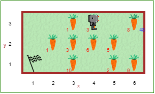

Kai svarstysite, kaip programuosite šio uždavinio sprendimą, būtinai atsižvelkite į tai, kad:
from library import grįžti_į_pradžią()).Atidarykite Robotuko aplinkos 18 lygį.
Reborgas vėl renka morkas. Tačiau šį kartą visi daržai skirtingo dydžio. Kai kuriose vietose morkos auga labai gerai (todėl kai kuriose vietose jų yra daugiau nei viena), o kai kuriose - visai prastai (todėl yra vietų, kur morkos neauga). Robotukas gali atsirasti bet kurioje sodo vietoje ir gali būti nukreiptas bet kuria kryptimi. Vienas iš galimų sodų atrodo taip:
Robotuko užduotis - surinkti visas morkas, sudėti jas į didelę morkų dėžę šiaurės rytiniame daržo kampe ir grįžti į pietvakarinį sodo kampą pelnytai pailsėti.
Lygis 17: Įveikti labirintą Turinys Lygis 19: Kitas pasivaikščiojimas